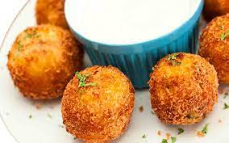

Potato Bombs

Description
Crispy on the outside and fluffy on the inside, these potato bombs are a treat.
Ingredients
- 4 large potatoes
- 1/2 cup grated cheese
- 1/4 cup chopped chives
- Salt and pepper to taste
- Oil for frying
Steps
- Boil potatoes until they're soft. Mash them.
- Add cheese, chives, salt, and pepper. Mix well.
- Shape into balls and deep fry until golden brown.